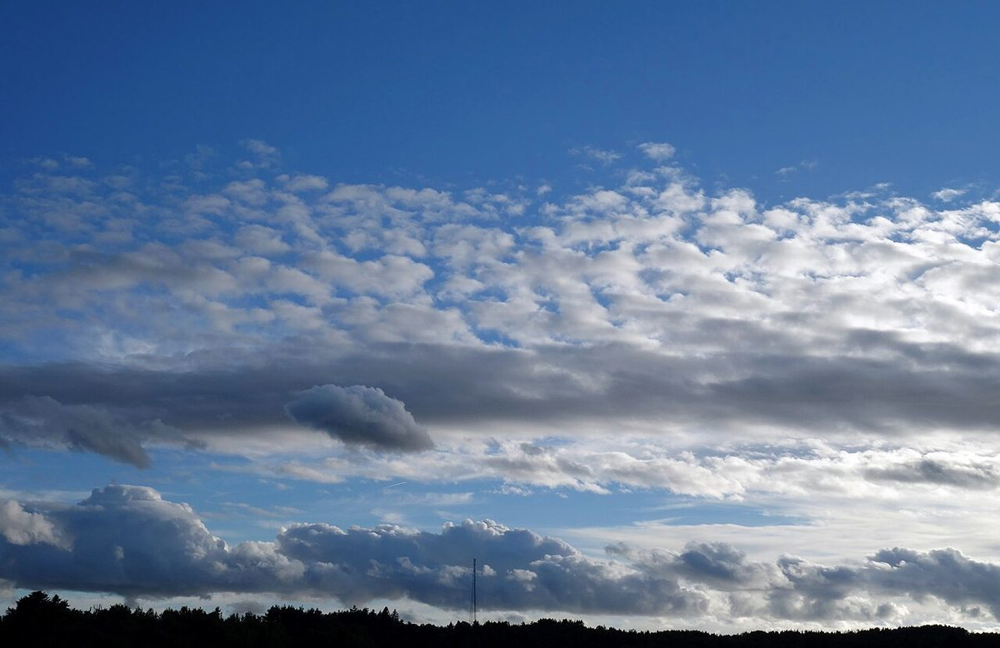
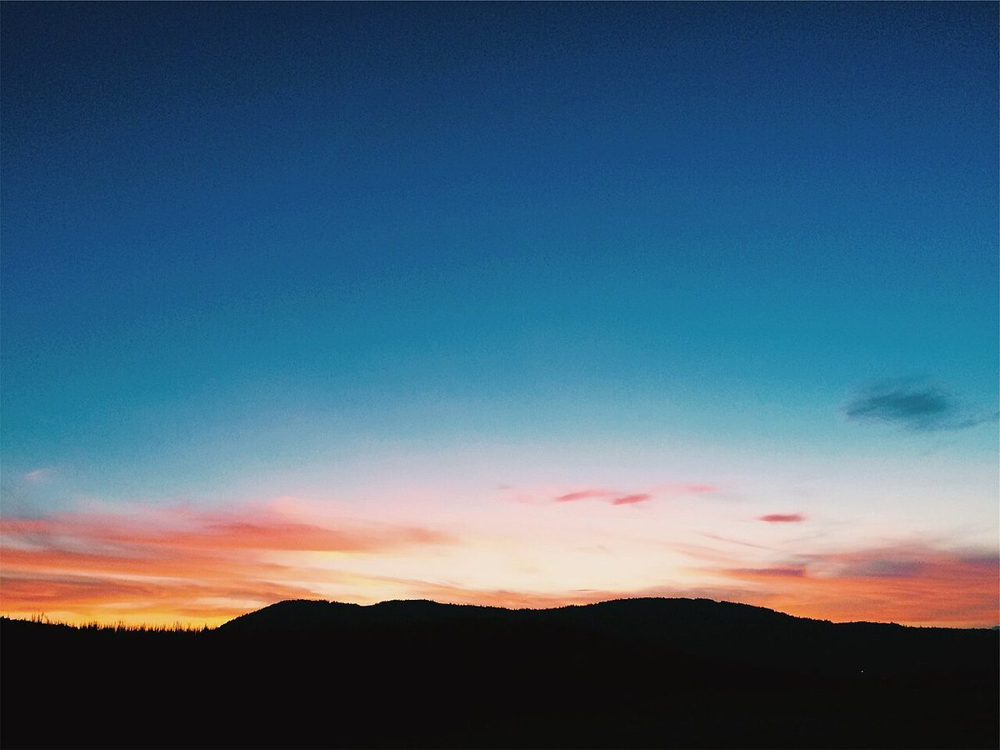

制作側の連想
「ホームの白線の内側」という作り
店名の由来は分かりません。制作側は、所在地の表記にある「駅正面」という言葉と店名の「そらいろ」から、駅のホームで電車を待ちながら空を見上げる時間を連想しました。そこでこのサイトは、駅名標のような看板、黄色い点字ブロックの帯、行き先ごとの「番線」の見出しで作っています。お店の理念や由来とは無関係な、制作側の連想です。
1番線から4番線
ひとつの空の、4つのいろ。
写真はお店や加賀市の風景ではありません。空のいろを並べるために選んだ、国外・撮影地不明のフリー素材です。
- 1ひるのそら

撮影地不明のイメージ - 2うろこのそら

国外のイメージ(スウェーデン) - 3ゆうぐれのそら

国外のイメージ(スウェーデン) - 4くれのそら

撮影地不明のイメージ
ご案内
お店のこと(確認できたものだけ)
| 所在地 | 石川県加賀市動橋町ロ-1番 IRいしかわ鉄道 動橋駅正面 |
|---|---|
| 電話 | なし |
| 営業時間 | 準備中 |
| 定休日 | 準備中 |
| ご予約 | 準備中 |
| 駐車場 | 準備中 |
| SNS | Instagram @sorairo_cafe_0610 |